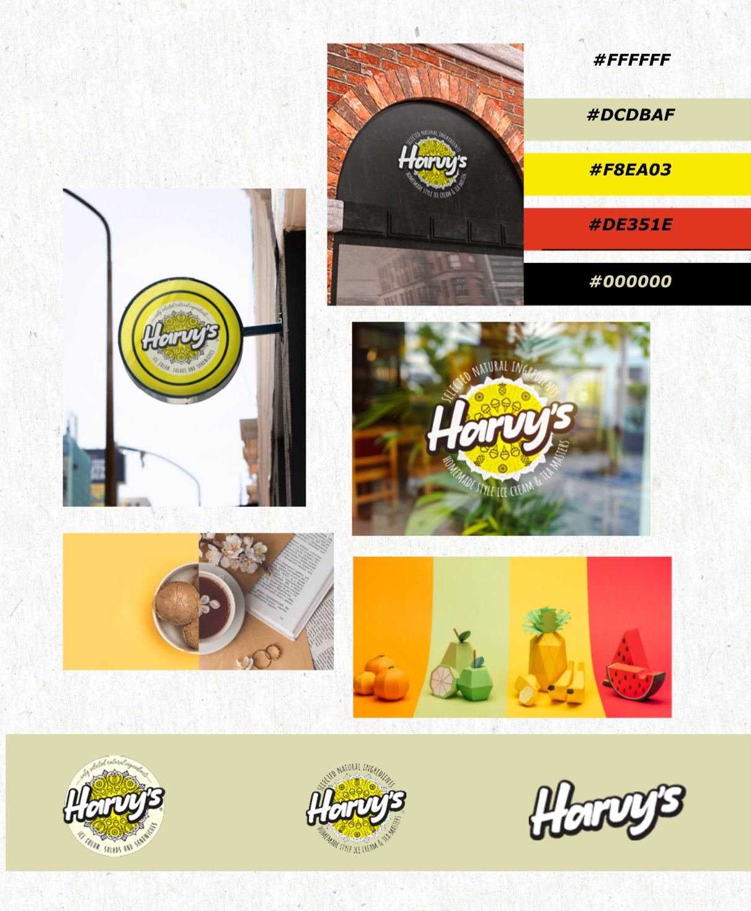
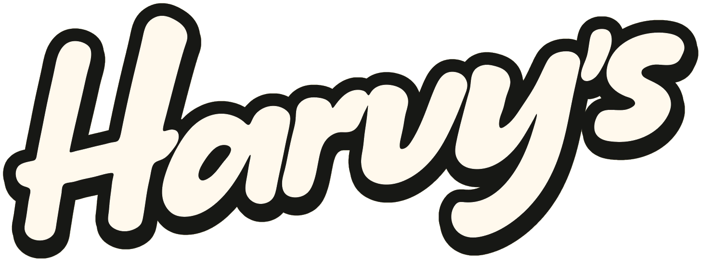
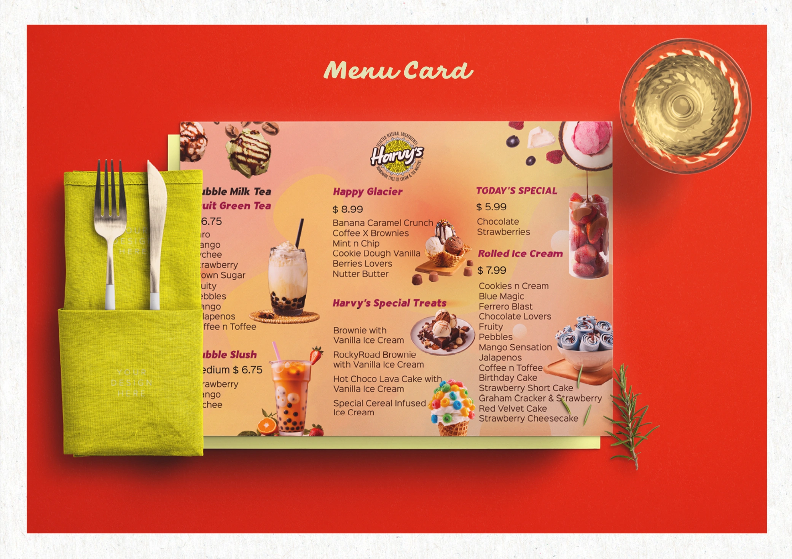
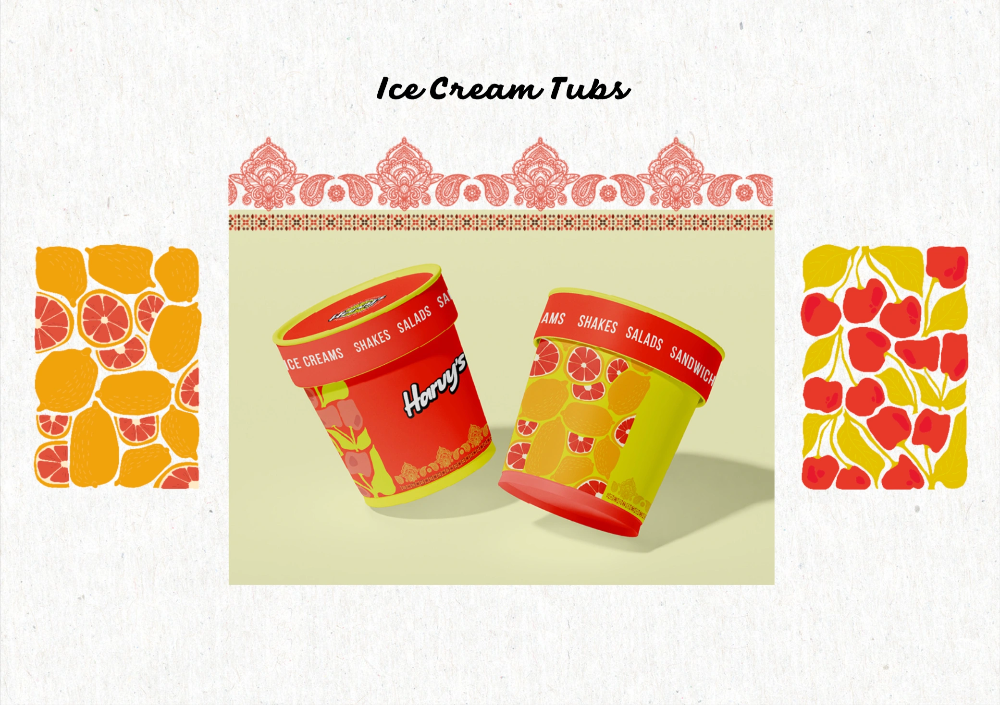
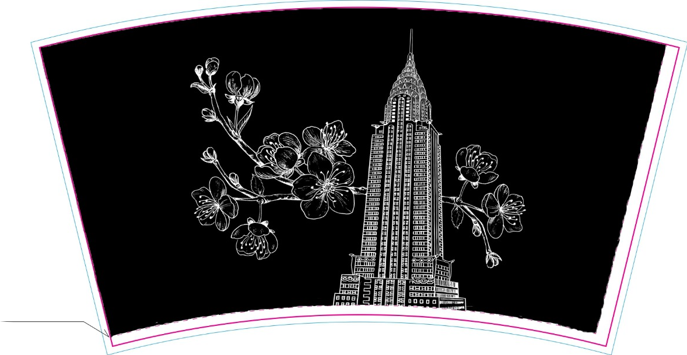
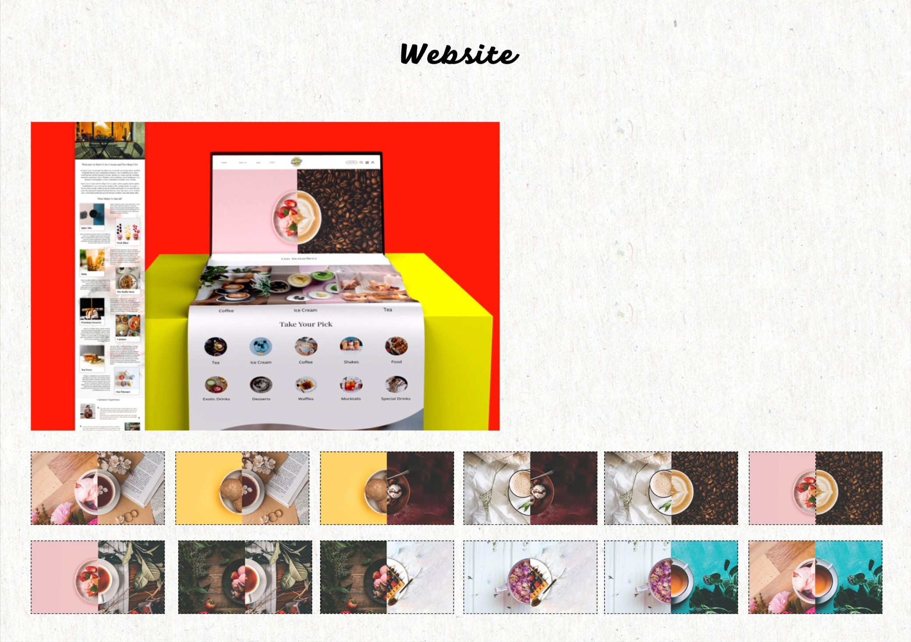

Homemade Punjabi ice cream and chai, competing with big dessert chains on the same street.
The warmth of a Punjabi summer kitchen: turmeric, chilli and hand-drawn paisley.
One stamped circular badge that works on glass, hanging signs and tub lids.
A full café system, from shopfront to takeaway cup to a half-ice-cream, half-chai website.


Identity · Packaging · WebHarvy’s makes homemade-style ice cream and chai with Punjabi roots. The identity had to feel like summer, yet hold its own beside the big dessert chains.
I built it around one circle: a stamped badge that works on shopfront glass, hanging signs and tub lids. Turmeric yellow and chilli red carry the heat; a soft sage keeps it from shouting.
Logo system — Signage — Menu — Tubs — Cups — Website

Hand-drawn paisley borders and fruit prints tie every tub back to home.
A hand-drawn Chrysler Building wrapped in cherry blossom, in white ink on black. Every takeaway cup carries Harvy’s city-café story out of the door.

16oz double-wall cup · Flat print layout
Every menu tile is split down the middle: one side scoop, one side cup. Pick a pairing and order in a tap.